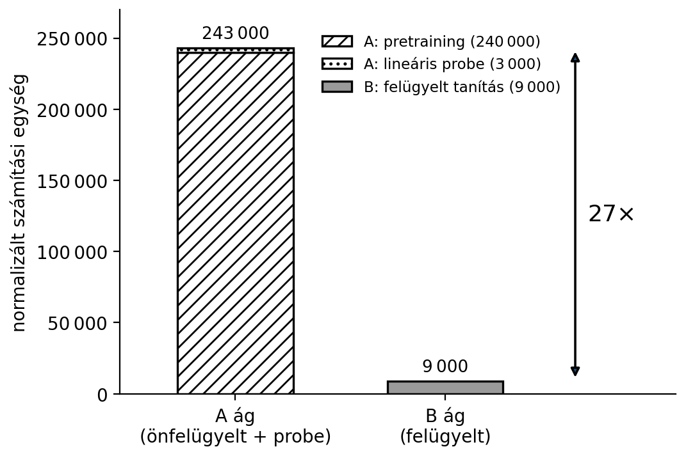

A 30.3. Negatív nélküli módszerek és collapse egységben láttuk, hogy a kontrasztív és a negatív nélküli módszerek egyaránt összeomolhatnak konstans reprezentációba (collapse), ha a stop-gradient (a teacher ág kimenetének konstansként kezelése a veszteségben), a veszteség vagy a teachermechanizmus (az exponenciális mozgóátlaggal frissített enkóder) nem megfelelő. Ebben az alfejezetben azt vizsgáljuk, hogyan lehet egy önfelügyelt pretraining (címke nélküli előzetes tanítás) utáni downstream (célfeladati) eredményt korrekt módon összehasonlítani egy felügyelt kiindulási modellel. Az előismeret: a frozen probe (rögzített enkóder mellett tanított lineáris fej) fogalma, a train/val/test felosztás és a matched-recipe (azonos receptű) abláció 18.4. Reziduális blokk ablatív vizsgálata gondolata; ott a reziduális blokk hatását csak azonos adat, augmentáció és tanítási költség mellett lehetett izolálni, és ugyanezt az elvet alkalmazzuk itt a pretext célra.
Induló kérdés: ha az A módszer 0,87, a B módszer 0,79 tesztpontosságot ér el ugyanazon a teszthalmazon, akkor állíthatjuk-e, hogy A reprezentációja jobb? A válasz csak akkor lehet igen, ha a két ág azonos címke- és számítási kerettel, azonos adatmedencével és azonos protokollal futott. Ellenkező esetben a különbség lehet pusztán a több adat vagy a több számítás következménye.
Legyen az enkóder
tehát egy képből -dimenziós vektort készít. A pretraining során egy címke nélküli képhalmazt használunk:
Minden -hez két augmentált nézetet rendelünk, és ; a [P17] SimCLR keretében a kontrasztív pretext cél egy pozitív párként kezeli -t, a batch többi elemét pedig negatívként. A pretext „címke” tehát a kép példányazonossága, nem emberi osztálycímke. A downstream osztálycímkék ebben a fázisban ismeretlenek a modell számára.
A frozen probe során adott egy címkézett halmaz
és egy rögzített enkóderparaméter . Képezzük a reprezentációkat , majd egy affin fejet tanítunk:
Batchben
mellett a logitok
.
A „frozen” szó azt jelenti, hogy a veszteség gradiensét csak
-re
és
-re
számítjuk;
a tanítás során. PyTorchban ez a torch.no_grad() alatti
forward vagy requires_grad_(False) használatát jelenti.
BatchNorm-rétegeknél az enkódert kiértékelő módba kell tenni, hogy a
running statisztika és ne a batch statisztikája érvényesüljön.
Címkeköltségvetés. Egy módszer címkeköltsége : azon képpárok száma, amelyeket bármilyen felügyelt optimalizáláshoz, korai leállításhoz vagy modellválasztáshoz ténylegesen felhasználtunk. A tesztcímkéket a végső kiértékelésen kívül nem számítjuk ide, és a pretext augmentációból származó pozitív/negatív viszonyok sem címkék.
Számítási költségvetés. Legyen egy kép enkóder-forwardjának normalizált költsége, pedig az enkóder-backwardé. A arány hardverfüggő; ebben a jegyzetben csak könyvelési konvencióként a értéket használjuk. A kontrasztív pretraining egy eredeti képre két nézetet, tehát két forwardot és két backwardot jelent. Egy felügyelt lépés egy képre egy forward és egy backward. Ezzel
az A önfelügyelt ág normalizált költsége, ahol a pretraining epochok, a frozen probe epochok száma. A felügyelt B kiindulási ág költsége
ahol a felügyelt kép-címke párok száma, az epochok száma.
Az összehasonlítás akkor tisztán a reprezentációról szól, ha az erőforrás-különbségek nem magyarázhatják a mért különbséget. Ezt egy azonosíthatósági lemmában rögzítjük.
Lemma (erőforrás-konfúzió az additív feltevés mellett). Tegyük fel, hogy egy módszer végső pontszáma
ahol a vizsgált módszercsalád indikátora, a számítási, a címke-, a pretraining képmennyiségi erőforrás, pedig nulla várható értékű hibatag. Ha a két megfigyelt ág között legalább egy erőforrás értéke különbözik, akkor a megfigyelt különbséghez végtelen sok különböző módszerhatást rendelhetünk, tehát önmagában nem azonosítható.
Bizonyítás. Jelölje , és . Feltéve mellett az átlagos megfigyelt különbség
Ha például , akkor tetszőleges módszerhatáshoz választhatjuk
és ezzel ugyanazt a különbséget kapjuk. A választás tetszőleges, tehát a megfigyelés nem különíti el a módszerhatást az erőforráshatástól. Ha , de vagy , akkor az adott nemnulla -val ugyanez a konstrukció elvégezhető.
A lemma feltétele az additív modell, ezért nem általános statisztikai azonosíthatósági tétel. A célja az, hogy pontosan megfogalmazza: a több adatot és több számítást használó módszer fölénye nem automatikusan architekturális vagy reprezentációs bizonyíték. A gyakorlati következmény az alábbi protokoll:
scene_id, ezért ugyanaz a jelenet nem
kerülhet több halmazba.Vegyünk egy , normalizált enkódert. Az A kontrasztív ág címkézetlen képet használ pretraining epochon át, majd címkével probe epochot futtat. Ekkor
A B felügyelt ág címkével és epochhal:
Az A ág tehát -szor több normalizált számítást és extra képet használ, miközben a címkeköltség egyenlő. Ha az A ág 0,87, a B ág 0,79 tesztpontosságot érne el, a mondat helyes formája így szól: „A kontrasztív pretraining nagyobb adat- és számítási kerettel 0,87-ot ért el”; nem pedig „a kontrasztív reprezentáció jobb”. A fair összehasonlításhoz a B ágnak kerethez epochot kellene kapnia, vagy az A ágnak a képből és a pretraining epochokból annyit elvenni, hogy teljesüljön.

Előfeltételek. Python 3.12, CPU; a lab/
munkakönyvtárban uv sync-kel telepített környezet (a
uv.lock szerint NumPy 2.3.5 és pandas 2.3.3; a közölt mért
kimenetek a könyv ellenőrző környezetéből, Python 3.12.3 és NumPy 2.5.4
alatt készültek); a laborban használt GlyphLab-fájlok a
data/ alatt (images.npy,
masks.npy, metadata.csv közül a szükségesek);
a korábbi laborokban előállított checkpoint(ok); a futásidőt a futtatás
során mért értékként kell rögzíteni.
A következő kód a fenti könyvelést hajtja végre. A kód lefutott
(Python 3.12.3, a dataclasses modulon kívül nincs
függősége); a mért kimenetet a kód utáni blokk tartalmazza.
# labor/n120_budget_bookkeeping.py
"""n120 erőforrás-könyvelés."""
from dataclasses import dataclass
@dataclass(frozen=True)
class Budget:
n_pre: int # pretraining képek száma (címke nélkül)
e_pre: int # pretraining epochok
l_probe: int # frozen probe címkézett képek
e_probe: int # probe epochok
l_sup: int # felügyelt baseline címkézett képek
e_sup: int # baseline epochok
def ssl_units(b: Budget, c_f: float = 1.0, c_b: float = 2.0) -> float:
# kontrasztív: 2 nézet, mindegyik forward+backward; probe: fagyasztott forward
return 2.0 * (c_f + c_b) * b.n_pre * b.e_pre + c_f * b.l_probe * b.e_probe
def sup_units(b: Budget, c_f: float = 1.0, c_b: float = 2.0) -> float:
return (c_f + c_b) * b.l_sup * b.e_sup
def report(b: Budget) -> None:
u_a = ssl_units(b)
u_b = sup_units(b)
label_match = b.l_probe == b.l_sup
print(f"SSL units: {u_a:.1f}")
print(f"Supervised units: {u_b:.1f}")
print(f"Compute ratio A/B: {u_a / u_b:.2f}")
print(f"Label budget match: {label_match}")
config = Budget(n_pre=2000, e_pre=20,
l_probe=300, e_probe=10,
l_sup=300, e_sup=10)
report(config)
assert ssl_units(config) == 243000.0
assert sup_units(config) == 9000.0
assert config.l_probe == config.l_supA mért kimenet:
SSL units: 243000.0
Supervised units: 9000.0
Compute ratio A/B: 27.00
Label budget match: TrueA report függvény nem ellenőrzi a pretraining-képek
diszjunkcióját; ezt a GlyphLab metadata.csv alapján külön
kell megtenni:
import pandas as pd
meta = pd.read_csv("data/metadata.csv")
# A futtatásban ténylegesen használt képindexek (itt mindkettő a train split).
idx_pre = meta.loc[meta.split == "train", "index"].to_numpy()
idx_probe = meta.loc[meta.split == "train", "index"].to_numpy()
by_index = meta.set_index("index")
test_scenes = set(meta.loc[meta.split == "test", "scene_id"])
assert set(by_index.loc[idx_pre, "scene_id"]) & test_scenes == set()
assert set(by_index.loc[idx_probe, "scene_id"]) & test_scenes == set()
print(len(set(by_index.loc[idx_pre, "scene_id"])), len(test_scenes))A mellékelt adaton ez az ellenőrzés lefutott (kimenet:
120 30): a pretraining és a probe ténylegesen használt
képeinek jelenetei nem metszik a test 30 jelenetét. Ha a pretraining más
indexhalmazt használna (például a teszt képeit is), az első
assert elbukna. A fenti Budget konfiguráció a
kézi számpélda értékeit állítja elő; a 240 képes reprodukciós terv saját
példánya:
repro = Budget(n_pre=240, e_pre=50, l_probe=240, e_probe=10,
l_sup=240, e_sup=104)
report(repro)SSL units: 74400.0
Supervised units: 74880.0
Compute ratio A/B: 0.99
Label budget match: TrueA felügyelt ág tehát epochot kap; a túltanulás kockázatát a val-alapú checkpoint-választás kezeli.
Helyi reprodukciós terv (nem elvégzett futtatás).
Kérdés: a kontrasztív pretraining javítja-e a GlyphLab
orientációfelismerést a matched-költségű felügyelt baseline-hoz képest?
Enkóder: ugyanaz a kis CNN mindkét ágban,
kimenettel. Pretraining: a train split 240 képe, címkék nélkül,
orientációt megőrző augmentációkkal (fényességeltolás,
Gauss-zaj), 90 fokos forgatás nélkül,
epochon át. Probe: ugyanezen 240 train kép címkéjével, frozen
enkóderrel, logitfejjel,
epochon át. Baseline: ugyanez a CNN és augmentáció, felügyelt tanítás a
240 train címkével. Számítási keret: az A ág
értékét a (30.4.2) képlettel kiszámítjuk, majd a B ág
epochszámát úgy állítjuk be, hogy
és
kicsi legyen. Modellválasztás: mindkét ágban a val split vesztesége
szerinti legjobb checkpoint; a test splitet egyszer, a legvégén
értékeljük. Három seeddel ismétlünk, és a pontosságok átlagát és
szórását közöljük. A korrupt tesztet (a corrupted_test.npy
60 képét, amelyek a test-sorrenddel párosított, zajjal rontott
változatok) csak a befagyasztott protokoll után nézzük meg. Ez a terv
még nem mért eredmény, ezért itt nem állítunk számot.
F1 (fogalmi, nehézség 1). Magyarázza el a különbséget a pretext pozitív pár és a downstream osztálycímke között. Adjon egy GlyphLab-példát, ahol egy augmentáció jó pretext pozitív párt ad, de a downstream orientáció szempontjából káros.
F2 (levezetési, nehézség 2). Legyen , . Az A ág , , , . A B ág , . Számítsa ki -t és -t. Címke-egyezés mellett teljesül-e a számítási keret? Ha nem, hány epochot kellene B-nek adni a keret kiegyenlítéséhez?
F3 (implementációs, nehézség 2). Bővítse a labor
report függvényét úgy, hogy visszatérési értékként adja a
két költségértéket és a címkeegyezés jelzőjét, és a címkeegyezést a
report belsejében assert ellenőrizze. Írjon
tesztet a kézi példára: egész elemszámú költségnél pontos egyenlőséggel,
lebegő aránynál
relatív toleranciával ellenőrizze a ssl_units képletét, és
mutassa meg, hogy egy szándékosan elrontott költségértéknél az
ellenőrzés elbukik.
F4 (hibakeresési, nehézség 2). A következő
protokollhibát látja egy hallgató kódjában: a pretraininghez a train és
a test képek listáját összefűzi, mert „a test képekhez úgysem használ
címkét”. Mi a hiba következménye, és milyen scene_id-alapú
ellenőrzéssel lehet ezt kimutatni? Javítsa a hibát és fogalmazza meg a
visszaellenőrzést.
F5 (kísérlettervezési/transzfer, nehézség 3). Tervezzen egy GlyphLab-kísérletet, amely egy kontrasztív és egy negatív nélküli pretext cél downstream hatását hasonlítja össze matched compute (azonos számítási keret) mellett. Adja meg a protokollt, a baseline-t, a metrikát és a következtetési korlátot. Előre nem kell győztest mondani; a negatív, de lefuttatott eredmény is elfogadható.
A protokoll rögzítse a hipotézist, a változó tényezőt, a kontrollt, a metrika mértékegységét, a seedeket, az erőforrásigényt és a számokkal megadott döntési szabályt; ha a terv tanítást is tartalmaz, az architektúrát, az optimizert, a tanulási rátát és az epochszámot is.
F1 megoldás. A pretext cél a példányazonosság: ugyanazon kép két augmentált nézete pozitív pár, más képek nézetei negatívak. Ez nem használ emberi osztálycímkét. A downstream címke a GlyphLab három orientációja. Ha a pretraining augmentáció 90 fokos forgatást is tartalmaz, akkor egy vertical kép elforgatott nézete ugyanahhoz a példányhoz tartozik, tehát a pretext szerint pozitív pár, de a downstream orientáció szerint horizontal címkéje lenne. A reprezentáció így megtanulhatja elnyomni az orientációt, ami épp a downstream feladat számára hasznos információ.
F2 megoldás.
A címke-egyezés teljesül, mert . A számítási keret nem teljesül, mert . A B ág szükséges epochszáma:
Mivel epochok egészek, a B ágnak legalább epochot kell kapnia; ekkor , és az A ág nem használ több keretet, mint B. Ellenőrzés: és ugyanabban a normalizált egységben van, ezért közvetlenül összevethető; mellett , tehát a B ág a legkisebb egész epochlépéssel éri el az A ág keretét.
F3 megoldás.
# labor/n120_budget_test.py
"""Bővített könyvelés teszttel."""
from dataclasses import dataclass
@dataclass(frozen=True)
class Budget:
n_pre: int
e_pre: int
l_probe: int
e_probe: int
l_sup: int
e_sup: int
def ssl_units(b: Budget, c_f: float = 1.0, c_b: float = 2.0) -> float:
return 2.0 * (c_f + c_b) * b.n_pre * b.e_pre + c_f * b.l_probe * b.e_probe
def sup_units(b: Budget, c_f: float = 1.0, c_b: float = 2.0) -> float:
return (c_f + c_b) * b.l_sup * b.e_sup
def report(b: Budget):
u_a = ssl_units(b)
u_b = sup_units(b)
assert b.l_probe == b.l_sup, "label budget mismatch"
return {"ssl": u_a, "sup": u_b, "label_ok": True}
b = Budget(n_pre=500, e_pre=8, l_probe=200, e_probe=5, l_sup=200, e_sup=20)
r = report(b)
assert r["ssl"] == 25000.0
assert r["sup"] == 12000.0
print(r)A kód lefutott (Python 3.12.3); mért kimenet:
{'ssl': 25000.0, 'sup': 12000.0, 'label_ok': True}. A teszt
elutasító képességét szándékosan elrontott n_pre értékekkel
is ellenőrizzük:
def mutation_rejected(n_pre, expected):
bad = Budget(n_pre=n_pre, e_pre=8, l_probe=200, e_probe=5,
l_sup=200, e_sup=20)
try:
assert report(bad)["ssl"] == expected
except AssertionError:
return True
return False
assert mutation_rejected(1000, 25000.0) # kétszeres pretraining-képszám
assert mutation_rejected(250, 25000.0) # feles pretraining-képszám
print("mutation check: both rejected")A mutációs kód is lefutott; mért kimenete:
mutation check: both rejected. A hibás konfigurációkra a
report 49000, illetve 13000 ssl értéket ad,
ezért a 25000.0-ra tett egyenlőség-ellenőrzés mindkét
esetben elbukik.
Egész elemszámú költségnél pontos egyenlőség (==) a
helyes ellenőrzés, mert ezek az értékek float64-ben pontosan
ábrázolhatók, és a szorzások itt nem kerekítenek. A lebegő arányt
relatív toleranciával ellenőrizzük, és a mutációnak ott is el kell
buknia:
import math
r = ssl_units(b) / sup_units(b)
assert math.isclose(r, 25000 / 12000, rel_tol=1e-9)
bad_r = ssl_units(b, c_b=1.0) / sup_units(b) # elrontott backward-szorzó
assert not math.isclose(bad_r, 25000 / 12000, rel_tol=1e-9)
print(f"ratio={r:.6f} bad_ratio={bad_r:.6f}")Mért kimenet: ratio=2.083333 bad_ratio=1.416667. Túl
laza tolerancia (például rel_tol=1, azaz 100%-os eltérés) a
kétszeres vagy feles költséghibát is elfedné, ezért nem használjuk.
F4 megoldás. A hiba következménye: az enkóder látja
a test képeit, még ha címkék nélkül is. A kontrasztív tanulás ekkor a
test képek példányszintű statisztikájához igazodhat, ezért a
tesztpontosság optimistán torzít. A mechanizmus konkrét: a pretraining
batch negatívjait a batch többi eleme adja, ezért a test képek jelenléte
megváltoztatja a negatívok eloszlását, és ha az enkóder
BatchNorm-réteget tartalmaz, a futó statisztikák is a test képekből
frissülnek. Mindkettő transzduktív: a modell a teszt adat eloszlásához
igazodik, miközben a tesztcímkékhez nem fér hozzá. A
metadata.csv scene_id oszlopából képzett
halmazok metszetét kell ellenőrizni:
import pandas as pd
meta = pd.read_csv("data/metadata.csv")
pretrain_ids = set(meta.loc[meta.split == "train", "scene_id"])
test_ids = set(meta.loc[meta.split == "test", "scene_id"])
assert pretrain_ids & test_ids == set(), "scene leakage"Javítás: a pretraining listához csak a train split képeit vegyük, a
test splitet se képként, se augmentált nézetként ne használjuk.
Visszaellenőrzés: az üres metszet mellett a pretraining indexek
mindegyike a train splitben legyen, és a végső tesztet csak
a rögzített protokoll legvégén futtassuk.
F5 megoldásminta. Protokoll: ugyanaz az enkóder,
;
a train split 240 képe a pretraining és a probe alapja, a val split a
modellválasztásé, a test split csak záró kiértékelésre szolgál. Változó
tényező: a pretext cél, kontrasztív (n119-ből választott
loss) és negatív nélküli stop-gradient/teacher. Mindkét ághoz azonos
augmentáció tartozik. A számítási keretet a labor könyvelési képleteivel
állítjuk be: előre rögzítjük
,
,
és
értékét, kiszámítjuk
-t,
majd a baseline
epochszámát használjuk, így
és
kicsi. Mindkét ág után azonos frozen probe fut,
címkével. Metrika: test top-1 pontosság (a legnagyobb logit szerinti
osztály a helyes címke) három seeddel, átlag és szórás; másodlagos,
előre rögzített metrika a korrupt test páros összevetése. A döntést a
jelenet szintű páros különbség bootstrap CI-je adja: 0-t kizáró 95%-os
CI esetén állítunk különbséget, egyébként nem; a három seed szórása csak
a tanítási varianciát jelzi. Baseline: ugyanaz az enkóder felügyelt
traininggel, matched compute és
.
Következtetési korlát: a kis GlyphLab adat nem természetes képi
benchmark; az eredmény csak erre a feladatra és erre a számítási keretre
érvényes. Előre nem rögzítünk győztest; a jegyzőkönyvben a nyers
pontosságokat, a seedeket és az eltéréseket közöljük.
A leggyakoribb hiba az erőforrás-előny átcímkézése reprezentációs előnnyé. Például ugyanaz az enkóder kontrasztív pretraininggel 0,84, felügyelt tanítással 0,79 pontosságot ér el; a hallgató ebből azt írja, hogy a kontrasztív cél jobb reprezentációt ad. A kézi példa azonban megmutatja, hogy a kontrasztív ág -szer több normalizált számítást és 2000 extra címkézetlen képet használhatott. Ha a felügyelt ág ugyanazt a keretet kapja, a különbség eltűnhet vagy előjelet válthat. Ez a kontroll hiánya, nem architekturális bizonyíték.
scene_id-halmazát
diszjunktan tartani? Mert egy jelenet két nézete ugyanazt a
scene_id-t viseli, ezért ha az egyik nézet a
pretrainingben, a másik a tesztben szerepel, a modell gyakorlatilag a
teszt jelenetet is látta; a felosztás egysége ezért a
scene_id, nem a kép. Visszahívás: a 30.3. Negatív nélküli módszerek és collapse
alfejezetben tárgyalt stop-gradient és teachermechanizmus itt csak mint
pretext cél szerepel; a 18.4. Reziduális blokk
ablatív vizsgálata matched recipe gondolatát erőforrás-könyveléssel
egészítettük ki. A 29.4. Anomáliapontszám
rekonstrukcióból anomáliaküszöbéhez hasonlóan itt is a
modellválasztást (checkpoint, hiperparaméter) a validációs halmazon kell
elvégezni, a tesztet csak a végén, egyszer értékeljük.Az önfelügyelt és a felügyelt ág összehasonlításához explicit erőforrás-könyvelés kell. A címkeköltség a felhasznált kép-címke párok száma; a számítási költség normalizált forward- és backward-egységekben írható fel. A kontrasztív pretraining egy eredeti képre két nézet miatt kétszeres encoderforward- és backward-költséget jelent. Ha a két ág címke-, számítási vagy adatmedencéje eltér, a pontszámkülönbségből a módszerhatás nem azonosítható, amit az additív feltevés mellett, a lemma keretei között mutattunk meg; ez nem általános azonosíthatósági tétel. A frozen probe az enkódert rögzíti, és csak a lineáris fejet tanítja. A könyvelő kód lefutott, a mért kimenet a kézi példa konfigurációjára 243000 és 9000 egység; a reprodukciós kísérlet viszont nem futott le, ezért abból származó pontosságot nem közlünk.
A 31.1. VAE és variációs alsó korlát a variációs autoenckódert vezeti be. A most bevezetett frozen probe és költségkeret ott is használható: a latens reprezentáció értékelése előtt rögzíteni kell a downstream címke- és számítási protokollt, mert a generatív rekonstrukciós pontszám önmagában nem downstreambizonyíték.